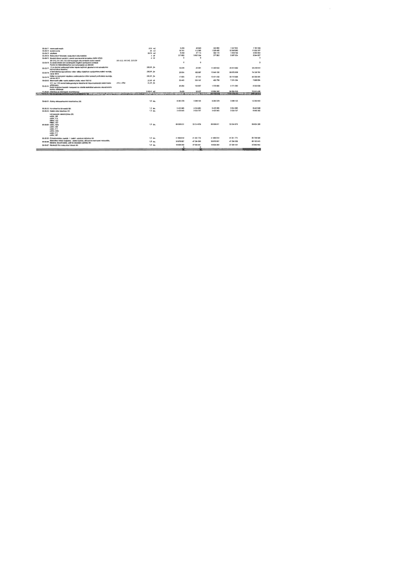

| Tétel | Menny. | Egys. | Anyag e.ár (net HUF) | Díj e.ár (net HUF) | Anyag összesen (net HUF) | Díj összesen (net HUF) | Anyag+Díj összesen (net HUF) |
|---|---|---|---|---|---|---|---|
| 55-00-71 Mennyezeti mozaik | 37,9 | m2 | 6 430 | 40 840 | 243 695 | 1 547 851 | 1 791 546 |
| 55-00-72 Vakolt felület | 95,0 | m3 | 10 741 | 112 085 | 1 020 401 | 10 648 080 | 11 668 481 |
| 55-00-73 Oldalfalak | 59,74 | m2 | 6 430 | 27 113 | 384 110 | 1 619 744 | 2 003 854 |
| 55-00-74 Restaurátori felügyelet... | 2,0 | klt | 377 853 | 5 657 034 | 377 853 | 5 657 034 | 6 034 887 |
| 55-00-77 Gipszkarton díszítőelemek | 589,99 | fm | 19 278 | 43 051 | 11 373 522 | 25 399 092 | 36 772 614 |
| 55-00-78 Osztópárkány alakító munkák | 589,99 | fm | 26 834 | 102 007 | 15 831 150 | 60 178 838 | 76 009 988 |
| 55-00-79 Beltéri díszítő elemek | 589,99 | fm | 17 605 | 67 331 | 10 431 456 | 39 724 825 | 50 156 281 |
| 55-00-80 Mennyezeti csillár... | 328,0 | db | 22 443 | 325 107 | 493 750 | 7 374 334 | 7 868 084 |
| 55-00-81 ... | 51,20 | fm | 26 934 | 103 927 | 1 378 995 | 5 171 062 | 6 550 057 |
| 55-00-82 Oldalfalak... | 2 000,0 | m2 | 6 430 | 32 027 | 12 859 192 | 64 054 535 | 76 913 727 |
| 56-00-00 RESTAURÁTORI DOKUMENTÁCIÓK | 1,0 | kls | 0 | 0 | 183 218 340 | 158 178 611 | 341 396 951 |
| 56-00-01 Álvány szerkezetek | 1,0 | kls | 9 282 378 | 3 068 125 | 9 282 378 | 3 068 125 | 12 350 503 |
| 56-00-02 Homlokzati kő tagozatok | 1,0 | kls | 5 425 685 | 3 014 863 | 5 425 685 | 3 014 863 | 8 440 548 |
| 56-00-03 Gipszstukkó | 1,0 | kls | 3 435 645 | 3 520 737 | 3 435 645 | 3 520 737 | 6 956 382 |
| 56-00-04 Lámpatestek restaurálása | 1,0 | kls | 65 509 611 | 33 314 679 | 65 509 611 | 33 314 679 | 98 824 290 |
| 56-00-05 Öntöttvas díszrácsok | 1,0 | kls | 41 856 814 | 41 941 774 | 41 856 814 | 41 941 774 | 83 798 588 |
| 56-00-06 Műemléki festés és mázolás | 1,0 | kls | 38 878 857 | 47 284 058 | 38 878 857 | 47 284 058 | 86 162 915 |
| 56-00-07 Kiegészítő fém restaurálási tervek | 1,0 | kls | 18 828 250 | 27 034 401 | 18 828 250 | 27 034 401 | 45 862 651 |
